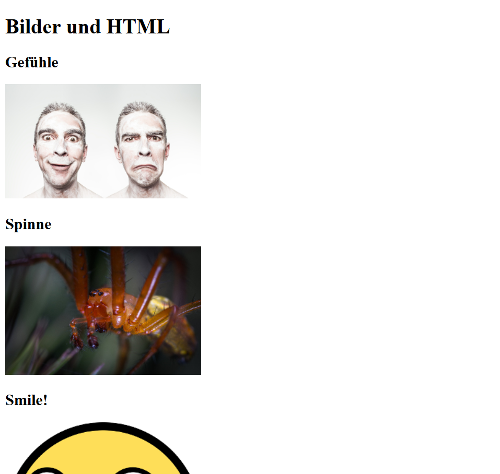

In Task 13 we have inserted the images in unchanged size. In practice, however, smaller images, so-called Thumbnails, are used to save bandwidth during transmission. If you click on the smaller image, a hyperlink will take you to the larger image.
task14.html_tn to the file name.The solution should then look like the following picture: 